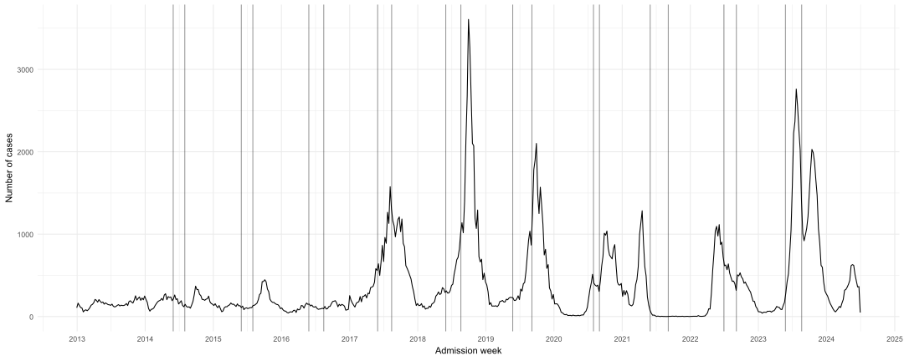

Code
library(odin)
library(tidyverse)
library(reshape2)
library(readxl)
library(lubridate)library(odin)
library(tidyverse)
library(reshape2)
library(readxl)
library(lubridate)df1 <- read_excel("D:/OUCRU/hfmd/data/TCM_full.xlsx",
col_types = c("date", "numeric", "text",
"text", "text", "date", "date", "date",
"text", "text", "text"))
colnames(df1) <- c("dob", "age", "gender", "commune", "district",
"reported_date", "onset_date","adm_date",
"medi_cen","inout","severity")
df1$dob <- df1$dob %>% as_date()
df1$adm_date <- df1$adm_date %>% as_date()
df1$age1 <- interval(df1$dob, df1$adm_date) / years(1)
df1$adm_week <- as.Date(floor_date(df1$adm_date, "week"))
df1$district <- df1$district %>% str_replace_all(
c( "Quận Gò vấp" = "Quận Gò Vấp"))
df1$district <- df1$district %>%
str_remove("Quận|Huyện|Thành phố") %>%
trimws(which = "both")
case <- df1 %>% filter(year(adm_date) == 2023 ) %>%
group_by(adm_week) %>%
count()
case$t <- 1:nrow(case)census2019 <- readRDS("D:/OUCRU/hfmd/data/census2019.rds")
pophcm <- census2019 %>% filter(province == "Thành phố Hồ Chí Minh") %>%
group_by(age) %>% summarise(n = sum(n))
pophcm$agee <- as.numeric(word(pophcm$age,1))
pop1 <- pophcm %>% filter(agee <= 6)
N1 <- sum(pop1$n)age_mod <- odin({
deriv(S1) <- -(beta11*I1 + beta12*I2) * S1 + mu * S1
deriv(I1) <- (beta11*I1 + beta12*I2) * S1 - gamma1*I1
deriv(R1) <- gamma1 * I1
deriv(S2) <- -(beta12*I1 + beta22*I2) * S2
deriv(I2) <- (beta12*I1 + beta22*I2) * S2 - gamma2*I2
deriv(R2) <- gamma2 * I2
initial(S1) <- S1_init
initial(I1) <- I1_init
initial(R1) <- R1_init
initial(S2) <- S2_init
initial(I2) <- I2_init
initial(R2) <- R2_init
beta11 <- user(0.003)
beta12 <- user(0.003)
# beta21 <- user(0.003)
beta22 <- user(0.003)
mu <- user(0.5)
gamma1 <- user(0.5)
gamma2 <- user(0.5)
S1_init <- user(0.8)
I1_init <- user(0.2)
R1_init <- user(0)
S2_init <- user(0.6)
I2_init <- user(0.4)
R2_init <- user(0)
})── R CMD INSTALL ───────────────────────────────────────────────────────────────
* installing *source* package 'odin23cdddbb' ...
** using staged installation
** libs
using C compiler: 'gcc.exe (GCC) 13.2.0'
gcc -I"C:/PROGRA~1/R/R-44~1.2/include" -DNDEBUG -I"C:/rtools44/x86_64-w64-mingw32.static.posix/include" -O2 -Wall -gdwarf-2 -mfpmath=sse -msse2 -mstackrealign -UNDEBUG -Wall -pedantic -g -O0 -c odin.c -o odin.o
odin.c: In function 'odin_metadata':
odin.c:168:18: warning: unused variable 'internal' [-Wunused-variable]
168 | odin_internal *internal = odin_get_internal(internal_p, 1);
| ^~~~~~~~
odin.c: In function 'user_get_scalar_int':
odin.c:265:47: warning: format '%d' expects argument of type 'int', but argument 2 has type 'const char *' [-Wformat=]
265 | Rf_error("Expected scalar integer for '%d'", name);
| ~^ ~~~~
| | |
| int const char *
| %s
gcc -I"C:/PROGRA~1/R/R-44~1.2/include" -DNDEBUG -I"C:/rtools44/x86_64-w64-mingw32.static.posix/include" -O2 -Wall -gdwarf-2 -mfpmath=sse -msse2 -mstackrealign -UNDEBUG -Wall -pedantic -g -O0 -c registration.c -o registration.o
gcc -shared -static-libgcc -o odin23cdddbb.dll tmp.def odin.o registration.o -LC:/rtools44/x86_64-w64-mingw32.static.posix/lib/x64 -LC:/rtools44/x86_64-w64-mingw32.static.posix/lib -LC:/PROGRA~1/R/R-44~1.2/bin/x64 -lR
installing to C:/Users/ASUS/AppData/Local/Temp/RtmpaQwxVR/devtools_install_705c1ba24a1c/00LOCK-file705c713a4d7/00new/odin23cdddbb/libs/x64
* DONE (odin23cdddbb)mu0 = 0.5
gamma1_0 = 5/30
gamma2_0 = 5/30
S1_0 = 0.4
I1_0 = 0.6
R1_0 = 0
S2_0 = .5
I2_0 = .5
R2_0 = 0binom_loglik <- function(data,par,N=N1) {
sir_odin_run <- age_mod$new(beta11 = par[1], beta12 = par[2],
# beta21 = par[3],
beta22 = par[3],
mu = mu0,
gamma1 = gamma1_0, gamma2 = gamma2_0,
S1_init = S1_0, I1_init = I1_0, R1_init = R1_0,
S2_init = S2_0, I2_init = I2_0, R2_init = R2_0)
times <- seq(0, 52, by = 1)
sir_output <- sir_odin_run$run(times)
sir_output <- data.frame(sir_output) %>% mutate(prev = I1/N1)
-sum(dbinom(x=data$n, size=N, prob=sir_output$prev[-1], log=TRUE))
}beta_mle <- optim(par=c(beta11 = 0.1, beta12 = 0.1,
# beta21 = 0.1,
beta22 = 0.1),
fn=binom_loglik,
data=case,
method="L-BFGS-B",
lower=0.1, upper=0.9)
beta_mle$par beta11 beta12 beta22
0.1000000 0.6409961 0.1000000 ## function to apply new parameters from optimization
after_cal <- function(par){
age_run <- age_mod$new(beta11 = par[1], beta12 = par[2],
# beta21 = par[3],
beta22 = par[3],
mu = mu0,
gamma1 = gamma1_0, gamma2 = gamma2_0,
S1_init = S1_0, I1_init = I1_0, R1_init = R1_0,
S2_init = S2_0, I2_init = I2_0, R2_init = R2_0)
times <- seq(1:52)
out_mod <- data.frame(age_run$run(times)) %>% mutate(prev=I1/N1)
return(out_mod)
}iii <- after_cal(beta_mle$par) %>% mutate(ca = case$n[-53]/N1)
ggplot(iii) +
geom_line(aes(x = t,y=prev*250))+
geom_point(aes(x = t,y=ca))
case2 <- df1 %>%
group_by(adm_week) %>%
count()
case2 %>% ggplot(aes(x = adm_week,y = n )) +
geom_line()+
geom_vline(xintercept = as.Date("2014-05-31"),
alpha = 0.4)+
geom_vline(xintercept = as.Date("2014-08-01"),
alpha = 0.4)+
geom_vline(xintercept = as.Date("2015-05-31"),
alpha = 0.4)+
geom_vline(xintercept = as.Date("2015-08-01"),
alpha = 0.4)+
geom_vline(xintercept = as.Date("2016-05-27"),
alpha = 0.4)+
geom_vline(xintercept = as.Date("2016-08-15"),
alpha = 0.4)+
geom_vline(xintercept = as.Date("2017-05-31"),
alpha = 0.4)+
geom_vline(xintercept = as.Date("2017-08-14"),
alpha = 0.4)+
geom_vline(xintercept = as.Date("2018-05-31"),
alpha = 0.4)+
geom_vline(xintercept = as.Date("2018-08-20"),
alpha = 0.4)+
geom_vline(xintercept = as.Date("2019-05-25"),
alpha = 0.4)+
geom_vline(xintercept = as.Date("2019-09-05"),
alpha = 0.4)+
geom_vline(xintercept = as.Date("2020-07-31"),
alpha = 0.4)+
geom_vline(xintercept = as.Date("2020-09-01"),
alpha = 0.4)+
geom_vline(xintercept = as.Date("2021-05-31"),
alpha = 0.4)+
geom_vline(xintercept = as.Date("2021-09-05"),
alpha = 0.4)+
geom_vline(xintercept = as.Date("2022-06-30"),
alpha = 0.4)+
geom_vline(xintercept = as.Date("2022-09-05"),
alpha = 0.4)+
geom_vline(xintercept = as.Date("2023-05-26"),
alpha = 0.4)+
geom_vline(xintercept = as.Date("2023-08-21"),
alpha = 0.4)+
scale_x_date(breaks = "1 year",date_labels = "%Y")+
labs(x = "Admission week",y = "Number of cases")+
theme_minimal()